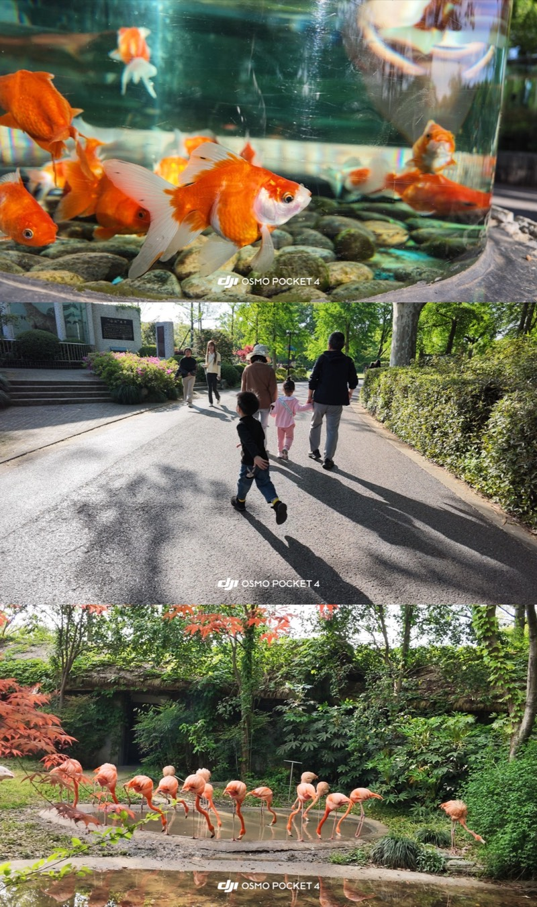
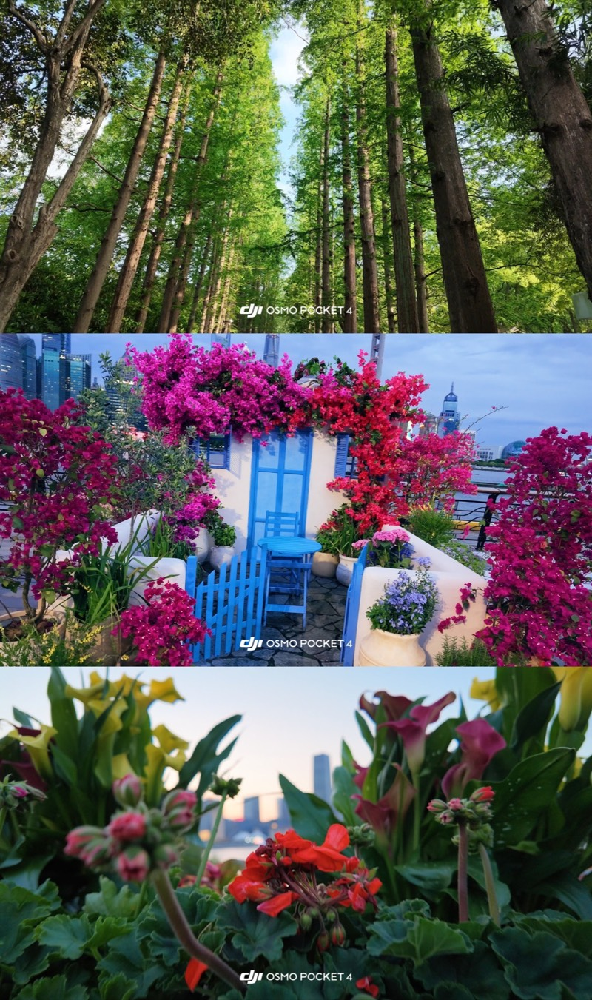
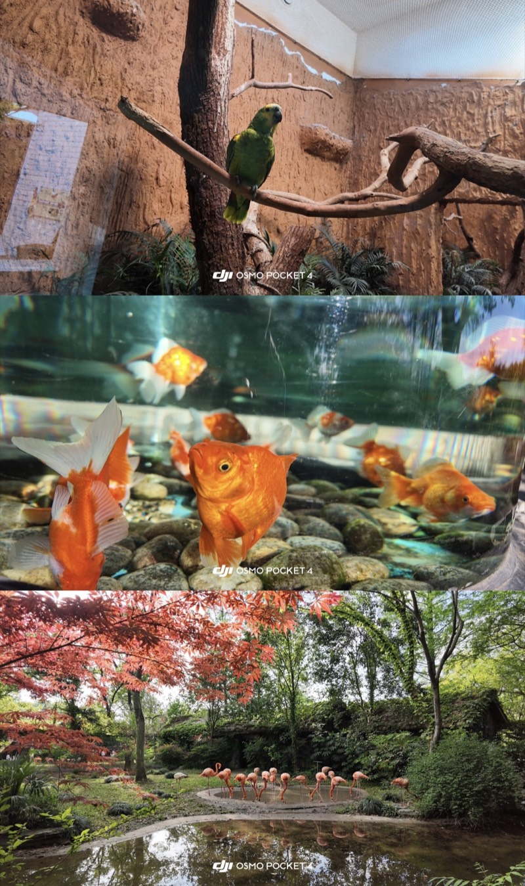
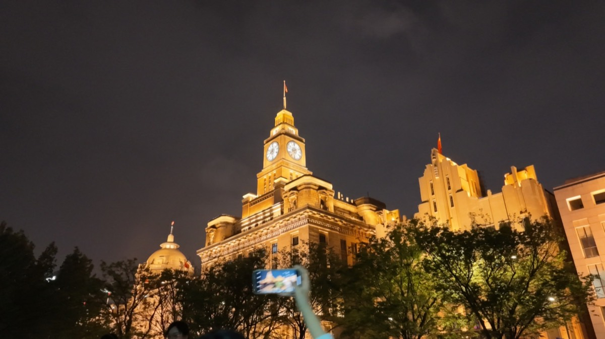

POCKET 4 · 已知的此刻
忠于眼前
一枚镜头，一条直觉。
把复杂留在机身里，
把按下快门留给你。
- 01单镜头叙事纯粹、直接、少犹豫
- 02轻量云台走进人群，不惊动生活
- 03真实样片色彩、运动与城市夜色
POCKET 4 × POCKET 4P
当一台设备足够小，世界便来不及摆好姿势。
A SMALL CAMERA, A LARGE WORLD
一代产品讨论清晰度，下一代产品也许该讨论理解力。我们借 Pocket 4 的实拍，想象 Pocket 4P 会把“随手拍”带去哪里。
所谓稳定，不是画面从此不动；
是你奔跑时，它仍记得风的方向。
以下 Pocket 4P 内容为概念推演，并非官方规格。
POCKET 4 · 已知的此刻
一枚镜头，一条直觉。
把复杂留在机身里，
把按下快门留给你。
POCKET 4P · 想象的下一步
也许多一枚镜头，
不是为了看得更多，
而是为了不必错过。
以下图片来自 Pocket 4 实拍素材。向下滚动，让目光从白昼走进夜晚。




THE CAMERA
AFTER CAMERA
画面稳定、清晰、忠实。
设备开始读懂意图与节奏。
影像不只是窗口，而成为可以重返的空间。